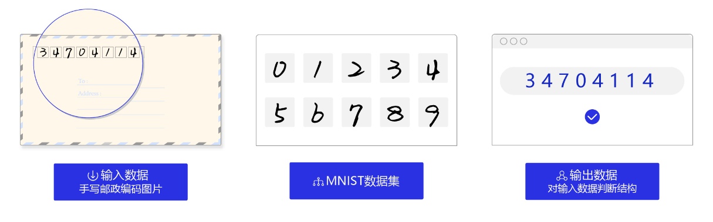
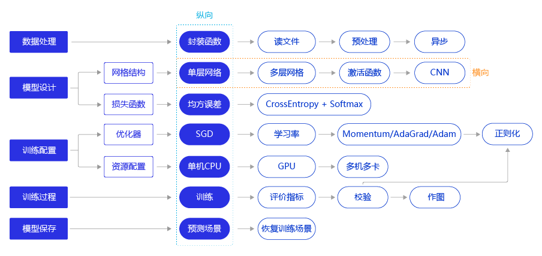

2.1 手写数字识别任务#
数字识别是计算机从纸质文档、照片或其他来源接收、理解并识别可读的数字的能力，目前比较受关注的是手写数字识别。手写数字识别是一个典型的图像分类问题，已经被广泛应用于汇款单号识别、手写邮政编码识别等领域，大大缩短了业务处理时间，提升了工作效率和质量。
在处理如 图1 所示的手写邮政编码的简单图像分类任务时，可以使用基于MNIST数据集的手写数字识别模型。MNIST是深度学习领域标准、易用的成熟数据集，包含50 000条训练样本和10 000条测试样本。

任务输入：一系列手写数字图片，其中每张图片都是28x28的像素矩阵。
任务输出：经过了大小归一化和居中处理，输出对应的0~9的数字标签。
MNIST数据集#
MNIST数据集是从NIST的Special Database 3（SD-3）和Special Database 1（SD-1）构建而来。Yann LeCun等人从SD-1和SD-3中各取一半数据作为MNIST训练集和测试集，其中训练集来自250位不同的标注员，且训练集和测试集的标注员完全不同。
MNIST数据集的发布，吸引了大量科学家训练模型。1998年，LeCun分别用单层线性分类器、多层感知器（Multilayer Perceptron, MLP）和多层卷积神经网络LeNet进行实验，使得测试集的误差不断下降（从12%下降到0.7%）。在研究过程中，LeCun提出了卷积神经网络（Convolutional Neural Network，CNN），大幅度地提高了手写字符的识别能力，也因此成为了深度学习领域的奠基人之一。
如今在深度学习领域，卷积神经网络占据了至关重要的地位，从最早LeCun提出的简单LeNet，到如今ImageNet大赛上的优胜模型VGGNet、GoogLeNet、ResNet等，人们在图像分类领域，利用卷积神经网络得到了一系列惊人的结果。
手写数字识别的模型是深度学习中相对简单的模型，非常适用初学者。正如学习编程时，我们输入的第一个程序是打印“Hello World！”一样。
深度学习框架的好处#
从代码结构上看，模型均为数据处理、定义网络结构和训练过程三个部分。
这就是使用像pytroch，tensorflow，或百度飞桨等框架搭建深度学习模型的优势，只要完成一个模型的案例学习，其它任务即可触类旁通。在应用实践中，程序员用熟悉的框架搭建模型，无需每次都另起炉灶，多数情况是先在模型库中寻找与目标任务类似的模型，再在该模型的基础上修改少量代码即可完成新的任务。

在“横纵式”教学法中，纵向概要介绍模型的基本代码结构和极简实现方案。横向深入探讨构建模型的每个环节中，更优但相对复杂的实现方案。例如在模型设计环节，除了在极简版本使用的单层神经网络（与房价预测模型一样）外，还可以尝试更复杂的网络结构，如多层神经网络、加入非线性的激活函数，甚至专门针对视觉任务优化的卷积神经网络。
这种“横纵式”教学法的设计思路尤其适用于深度学习的初学者，具有如下两点优势：
帮助读者轻松掌握深度学习内容：采用这种方式设计教学案例，读者在学习过程中接收到的信息是线性增长的，在难度上不会有阶跃式的提高。 模拟真实建模的实战体验：先使用熟悉的模型构建一个可用但不够出色的基础版本（Baseline），再逐渐分析每个建模环节可优化的点，一点点的提升优化效果，让读者获得真实建模的实战体验。 相信在本章结束时，大家将会对深入实践深度学习建模有一个更全面的认识，接下来我们将逐步学习建模的方法。